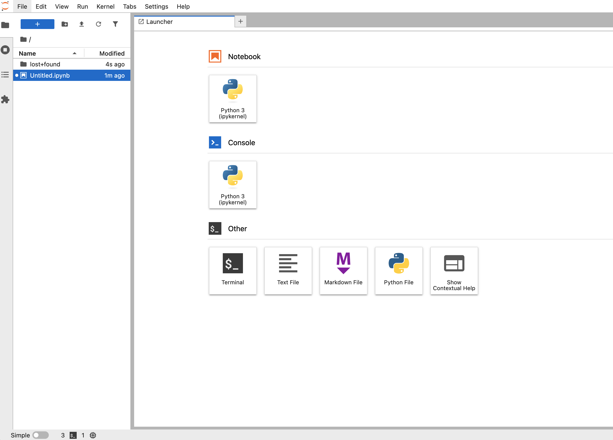
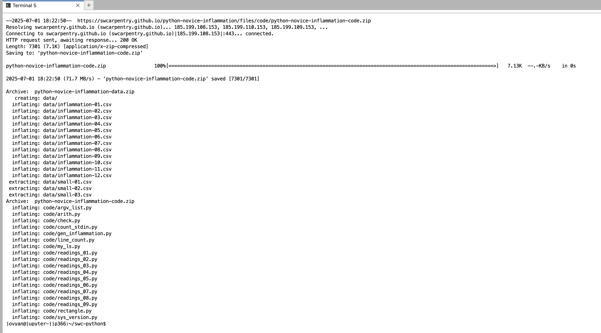
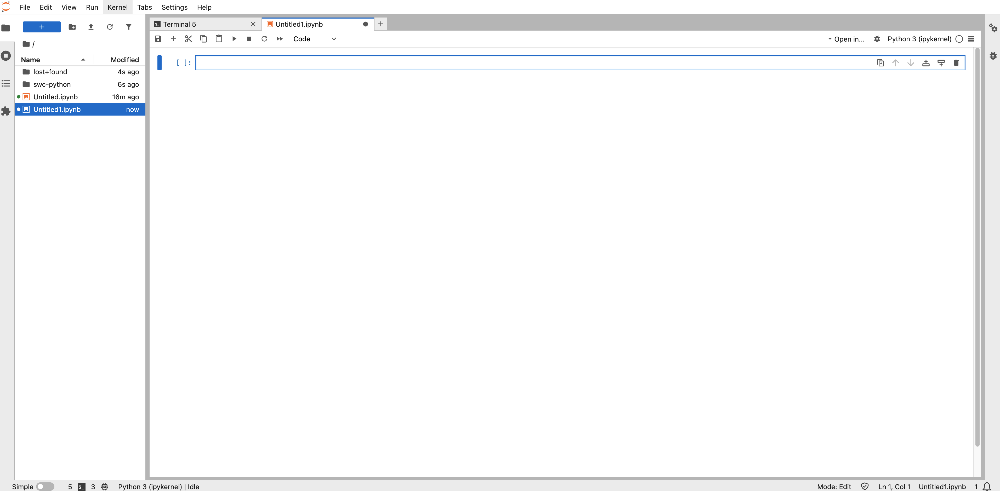

Introduction to Python Programming#
This workshop introduces Python for those that have little to no programming experience, and has two parts:
A quick introduction to Python and the basics of processing and visualizing data.
A more in-depth view into programming concepts in Python, including loops, conditions, functions, and debugging.
The workshop uses material from Software Carpentry’s Programming with Python lesson.
Preparation#
We’ll be using a hosted JupyterHub service for this workshop. Be sure to do the “Before the workshop” steps before and confirm they work for you prior to the start of the workshop.
Before the workshop
Click the “Sign in with Globus” button.
Under “Use your existing organizational login” choose “Drexel University” from the list of institutions and click “Continue”.
Sign in using Drexel Connect.
You’ll now be presented with a “Server Options” page. Choose “Jupyter Datascience” and click “Start”
Wait for the loading screen to finish, then you should see the Jupyter notebook interface, which looks like this:

You’re now ready for the workshop. There are some additional preparation steps, but we’ll do them together at the beginning of the workshop.
At the start of the workshop.
From the Jupyter notebook interface, click the “Terminal” button in the “Other” section to open a new shell.
In the shell, copy and paste the following lines to download the data we’ll be using:
cd
wget https://swcarpentry.github.io/python-novice-inflammation/data/python-novice-inflammation-data.zip
wget https://swcarpentry.github.io/python-novice-inflammation/files/code/python-novice-inflammation-code.zip
unzip python-novice-inflammation-data.zip
unzip python-novice-inflammation-code.zip
Your screen should look like this:

To confirm the download worked, run
ls. You should seecodeanddatadirectories:
jovyan@jupyter-jjp366:~/swc-python$ ls
code data python-novice-inflammation-code.zip python-novice-inflammation-data.zip
Click the “+” button next to the tabs at the top of the screen to open the Launcher again.
Click on “Python 3 (ipykernel)” in the “Notebook” section. Your screen should look like this:

The textbox you see is called a “cell” You can type Python code and press Shift+Enter to run it and create a new cell. You’re now ready to start the workshop!